An application for the role of Senior Product Designer
Hello
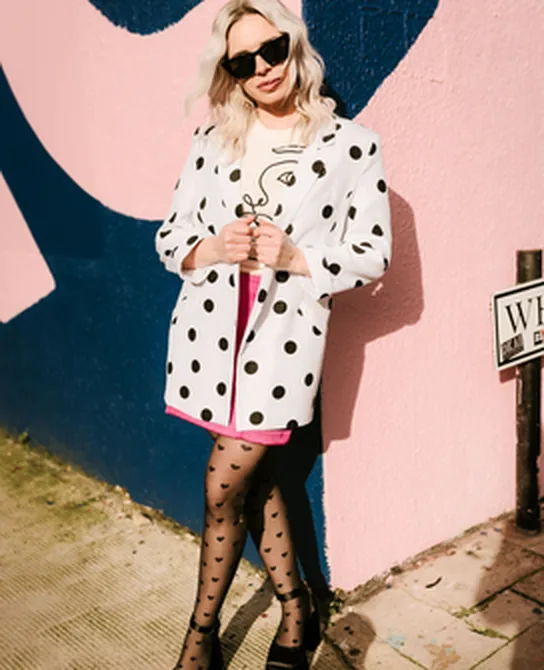
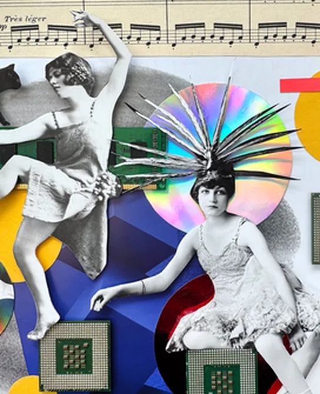
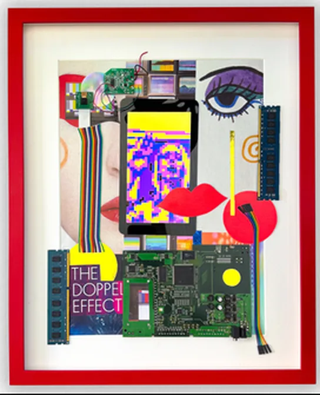
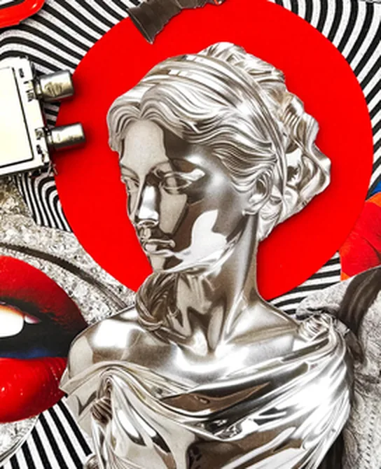
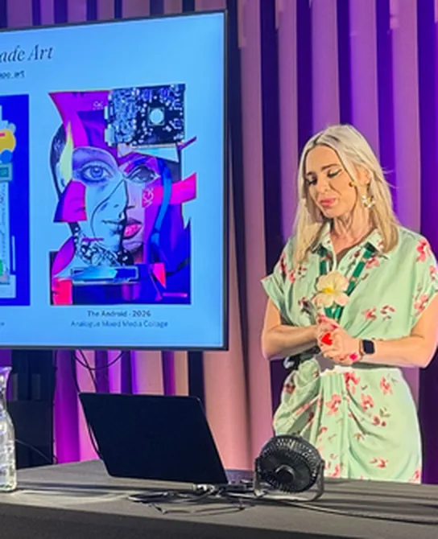
I'm Irina Csapo, a senior product designer with 15 years behind me. Most of that time has gone on the two things this role asks for at once: the experience a client sees, and the tooling the people inside the business use to make it happen. Regulated fintech, e-commerce, healthcare, and hardware that sits in people's homes.
I am also a practising artist but this isn't the reason to hire me. It is one of the reasons that makes me want to work at Sotheby's, to be closer to the art world and also, the reason I am trying to reach to you like this rather than just applying quietly through a form.
What this is
Four pieces of my work I mapped to your job description. Each is described the way you would describe an art object: what it is, where it came from, the condition it was found in, and what it achieved.
Then a note on institutions, and a condition report, because it seemed wrong to make a catalogue and leave out the part where you disclose the flaws.
- Specialisms
- Consumer experience
Operational tooling
Native mobile
Design systems - Sectors
- E-commerce
Fintech and payments
Healthtech
Connected hardware - Experience
- Fifteen years
Web & Mobile Apps
UX Research
Prototypes/Workflows - Available to view
- irinacsapo.co.uk irina.love @irina_csapo_art Download CV
Paycada
Operational web platform for automated invoice chasing and payments, regulated fintech platform.
- Specialisms
- Consumer & enterprise web app
Built in ambiguity
Design systems
Sole designer, three years
A business asking its own customers for money, repeatedly, without damaging the relationship it depends on.
A shipped product with a design system beneath it: three tiers of tokens, full component state coverage, and an accessibility audit that identified two live contrast failures already in production.
The workflows are the unglamorous kind: add a user, remove a user, create an organisation, edit its permissions, decide who gets to use the platform and what level of permissions they have.
Decisions about what goes out automatically, what a person sees before an invoice is sent, and how far an escalation is permitted to travel before somebody has to decide. Most of the work was in deciding where the human decision belongs.

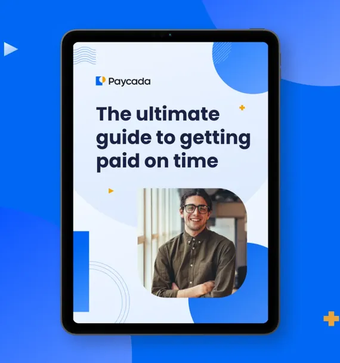
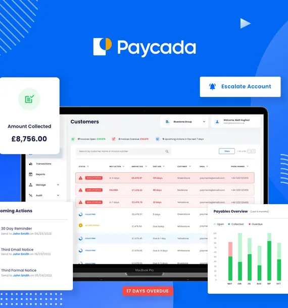
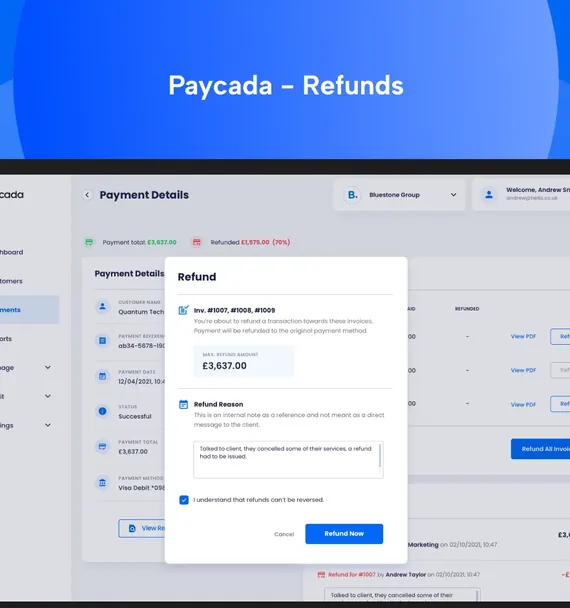
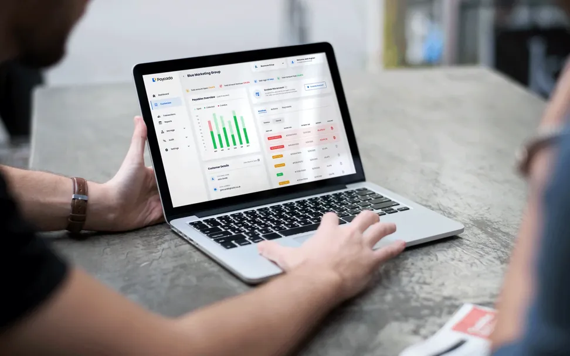
Veva
Mobile native application for electric vehicle charge points, iOS and Android
- Specialisms
- Consumer mobile app
Built in systems
Multiple users
Multiple edge case scenarios
Hardware installed at a customer's home, requiring a single mobile application to serve two users, electrical engineers and home users, with nothing in common.
The users are guided in the app through a series of steps that help them with crucial settings to configure and test against the charge point they're installing.
Multiple user journeys and wireframes created to evaluate the engineers' and users' precise steps. This allowed us to simplify their journey as well as discover areas of opportunity to better help them achieve their goals with the product.
Eleven conditional charging states animated in Rive and delivered to both platforms. An installation flow that completes without the home network.
Users can configure different cars and charging cycles specific to their needs, with multiple users accessing specific data relevant to them and their vehicle, from single or multiple home charge points.
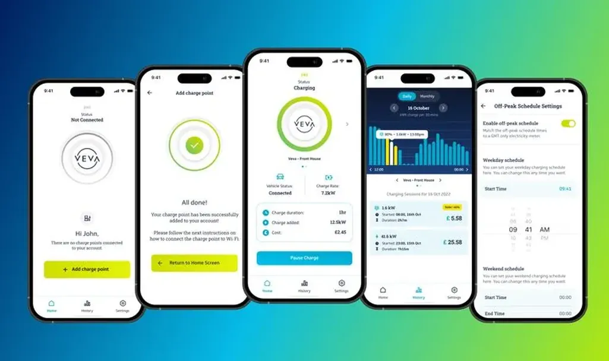

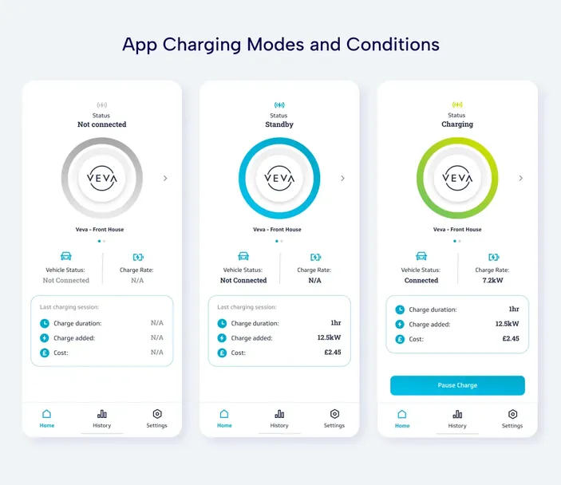
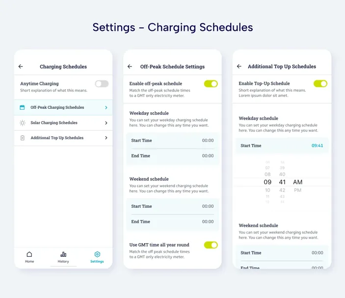
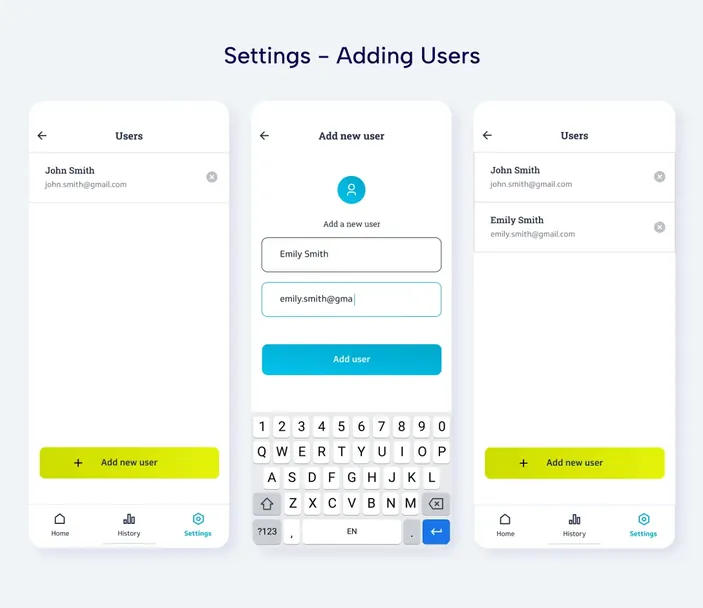
Omaze UK, New Draw Launch
Consumer subscription and PAYG experience, mobile-first, built within Shopify
- Specialisms
- New draw launch
Conversion uplift
A/B testing
Conversion optimisation
Behavioural experimentation
Commissioned following a subscription price increase from £10 to £15, which required the business to demonstrate new value to an audience it had just asked for more money.
Launched at approximately £650,000 per month of revenue against a forecast exceeding £1,000,000.
To increase conversion and revenue, we A/B tested a series of hypotheses. Third-party trust signals returned 7.3%. Winner reaction footage as a looping hero returned 4.8%. Reframing the subscription as the better value, rather than the alternative to a single purchase, returned 8.5%.
In total our conversion efforts led to a 35% conversion uplift. £1,500,000 in a single month, sustained thereafter above £1,000,000.


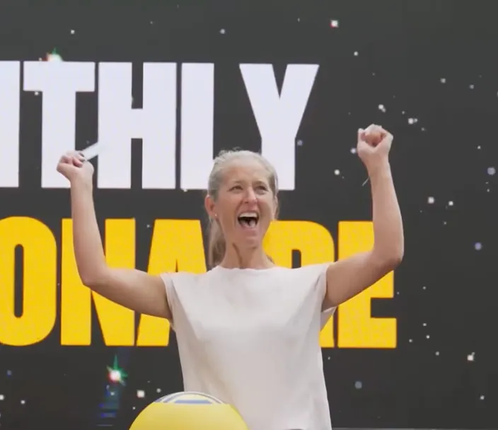
Tender Tech
Personal art practice, explorations of mixed media, electronic waste and collage, ongoing
- Specialisms
- Mixed media art
Analogue collage
Found ephemera
Interactive digital art
Included because it explains the other three. I began in print and branding before moving into product, and I have never entirely lost the habit of treating a discarded object as the most interesting thing in the room.
It is also the honest answer to why this application takes this form rather than the form of a covering letter.
Circuit boards, memory modules, ribbon cables and Raspberry Pi circuit integration, recovered from disposal and reused in my practice.
Bucharest Collage Festival. Talk delivered at MK Geek Night, “Tender Tech: Joy, E-Waste and the Art of Delightful Making”.
Not necessarily a qualification, but offered here as a flavour of my design practice.
An Artist's Spread
I'm building tools for artists so they can present their art in different forms
- Specialisms
- AI coding and prototyping
Design & build
Found ephemera
Interactive digital art
I love building tools and prototypes. The pages below are laid out as a catalogue, which may read as a flourish. It isn't. It's deliberate. I'm currently building a tool that takes a set of images and lets you read them as a book, spread by spread, because I have never found a satisfying way to look at a body of work online and I got tired of waiting for one. It is a work in progress.
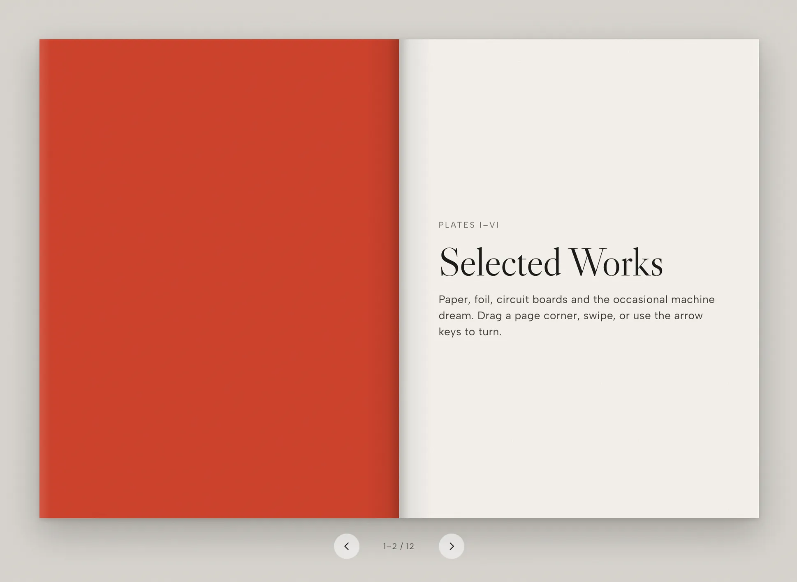
A catalogue ought to list its materials, so here are mine. Figma for layout, colour, imagery and the systems that hold them together. Recently Paper, which designs straight into code for the web, because the distance between a drawing and a working page is the part I most want to close. Then Claude Code to build it and keep iterating on it.
- Figma Design, systems, prototypes. Where most of the thinking happens.
- Paper New Designs straight into code for the web.
- Claude Code Daily. Building and iterating on the front end.
- Lovable Fast directions, made to be thrown away.
- Rive Interactive motion and animated assets.
- Jitter Motion design for the web.
- GitHub Version, deploy, ship. Including this page.
A Note on Institutions
How I would understand working as a Senior Product Designer at Sotheby's
Sotheby's has been selling things since 1744 and is now also shipping software. Those two facts sit in tension, and I suspect the tension is most of the job.
Most product designers treat heritage as drag: the weight that slows the release down, the approval that has to be routed around. I have never been able to see it that way. I spent the first part of my career in print and branding before moving into product, and I make pictures out of things other people have thrown away, so I am constitutionally inclined to believe the old thing is the valuable thing.
In practice that means moving at the pace a modern product team needs without treating the institution around it as an obstacle. A name that has survived two hundred and eighty-two years is an asset most companies would pay almost anything to have. It should be designed with, rather than in spite of.
Offered as seen
The following is noted in the interest of transparency and accuracy
No auction house experience
I know this world as someone who makes and exhibits work within it, not as someone who has worked inside the business of it. I would be learning the trade, and honestly, that makes me deeply excited. But what I can bring is above: complex operational workflows, commercial outcomes on the consumer side, native mobile, and the discipline of designing for two audiences at once.
I also believe in the transformative power of art and culture. I'm a deeply passionate, empathetic and curious person who loves nothing more than to learn and create.
Sotheby's say that diverse backgrounds, identities, and perspectives are indispensable to their global success. And I would love to live within those values.
Research
Most of mine has been behavioural and quantitative, alongside usability and prototype testing. I have not personally led an end-to-end research programme with primary interviews at its centre. It is the thing I am most actively closing, and I would want to begin by sitting with specialists rather than with a research plan.
Location
I'm based in Milton Keynes, which is a little over half an hour from Euston by train. Remote or hybrid suits the way I work and the office in New Bond Street is easy to reach.